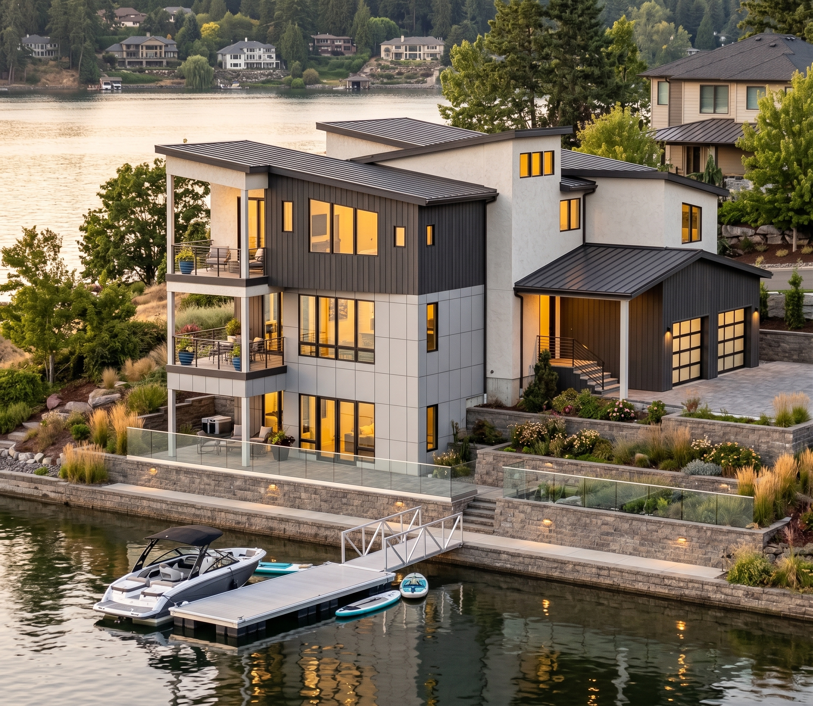
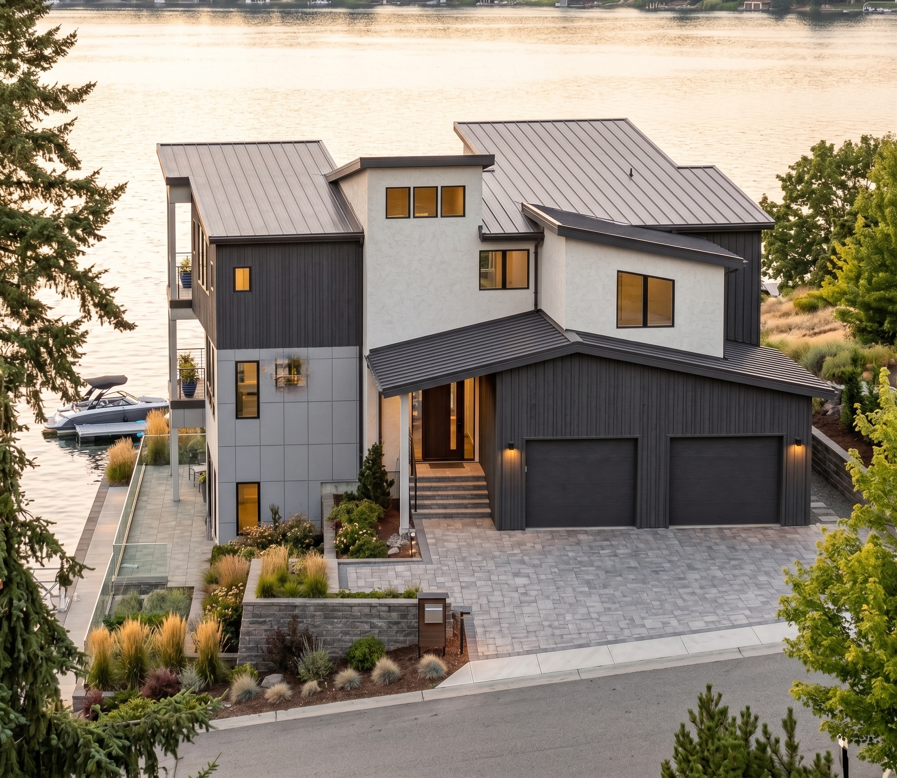
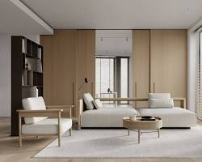
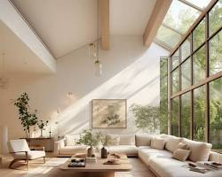

Custom Home · Lakefront · 2024
A custom home designed for a tight lakefront lot, where every inch of the site is maximized without sacrificing light, views, or a sense of openness. Vertical living, layered outdoor spaces, and a material palette that reflects the water and sky.
Lake Michigan shoreline
3,400 sq ft · 3 bedrooms · 3 baths
2024
Full architectural design & builder coordination
Exterior, interior, and detail views.




The Narrow Lot Waterfront Residence was designed for a couple building their forever home on a tight lakefront parcel with just 40 feet of frontage. The challenge was clear: how to create a spacious, light-filled home on a site where width is limited but the views are extraordinary.
The solution is a vertical home organized across three levels, with living spaces stacked to capture lake views from every room. A central staircase with floor-to-ceiling glass serves as a light well, drawing natural light deep into the narrow footprint. The main living level opens to a covered terrace and steps down to the waterfront.
Materials were chosen for their relationship to the water: white oak floors, pale stone, and a cedar exterior that will weather to a soft silver-gray. Deep overhangs on the lake-facing side provide shade and shelter, while a rooftop terrace offers panoramic views up and down the shoreline. Every space was modeled in BIM and reviewed in 3D with the clients throughout the process.